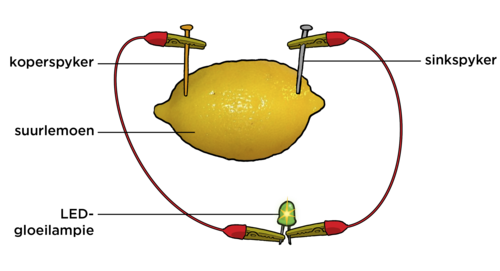
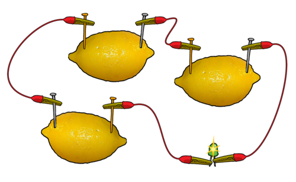
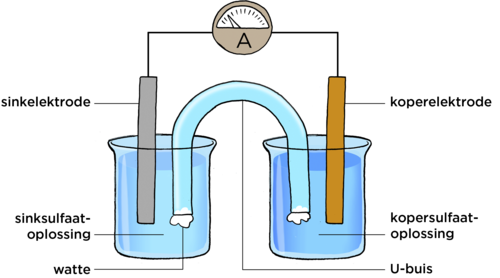
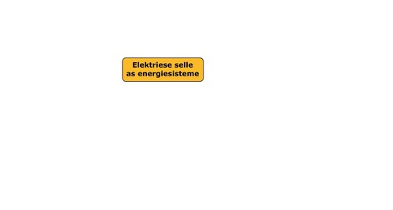
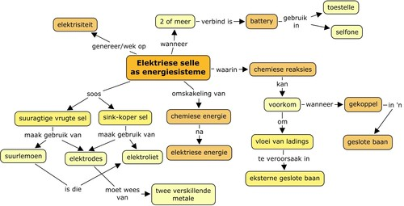

<div class="container energyandchange"><div id="contents" class="col-md-12 main-content"><span  class="ch-nr-2"/>
        <div  class="section"><h1 class="title" id="toc-id-0">Elektriese selle as energiestelsels</h1><div class="teachers-guide">
<p/>

<p><strong>Hoofstukoorsig</strong></p>

<p>0,5 weke</p>

<p>Hierdie is 'n kort hoofstuk met slegs 1.5 ure onderrigtyd hieraan toegeken. Ons hersien stelsels en energie-oordrag in 'n stelsel en fokus op elektriese selle. Die energiekonsep, potensi&#235;le en kinetiese energie, en die behoud van energie is vir die eerste keer in Gr. 7 in Energie en Verandering behandel. In Gr. 8 in Energie en Verandering het leerders ook kortliks na energie-oordrag in elektriese stelsels gekyk. Die fokus van hierdie hoofstuk is egter op elektriese selle.</p>

<p>Ons gaan begin deur te kyk na 'n eenvoudige elektriese sel wat uit 'n suurlemoen bestaan, om te verduidelik wat in 'n sel in 'n elektriese stroombaan gebeur. Daarna kyk ons na 'n meer ingewikkelde sel wat uit koper en sink elektrodes bestaan. Dit is belangrik om te onderskei tussen 'n battery en 'n sel, aangesien die woord 'battery' in die alledaagse taal vir 'n sel gebruik word. Wanneer ons hier die term 'battery' gebruik, verwys ons na 'n kombinasie van twee of meer selle wat aanmekaar gekoppel is.</p>

<p>2.1 Elektriese selle (1.5 ure)</p>
<table><tr><td><p><strong>Take</strong></p></td><td><p><strong>Vaardighede</strong></p></td><td><p><strong>Aanbevelings</strong></p></td></tr><tr><td><p>Aktiwiteit: 'n Vrugtesel</p></td><td><p>Die volg van instruksies, waarneming, analisering, verduideliking</p></td><td><p>KABV voorgestel</p></td></tr><tr><td><p>Aktiwiteit: Sink-kopersel</p></td><td><p>Die volg van instruksies, waarneming, afmetings, analisering, verduideliking</p></td><td><p>KABV voorgestel</p></td></tr></table><p/>
</div><div class="note col-md-10" data-type="keyquestions"><ul data-class="ListBulleted"><li>Waar kry 'n elektriese stroombaan sy energie vandaan?</li>
<li>Wat is binne-in 'n sel?</li>
<li>Hoe kan ons ons eie elektriese selle bou?</li>
<li>Hoe verskaf 'n elektriese sel energie?</li>
</ul></div>
<p>Hierdie kwartaal ondersoek ons elektrisiteit en elektriese stroombane. Ons gaan meer spesifiek na elektriese selle kyk. Ons het alreeds na elektriese selle in vorige grade gekyk toe ons van elektriese stroombane geleer het. Wat is die simbool vir 'n elektriese sel? Teken dit in die spasie hieronder. Dui die positiewe en negatiewe terminale aan.</p>

<p><br/><br/><br/></p>
<div class="teachers-guide">
<p/>

<p>Die simbool vir 'n elektriese sel:</p>
<figure id="gd-idm4579184"></figure><p/>
</div><div class="section"><h2 class="title" id="toc-id-1">Elektriese selle</h2><div class="note col-md-6" data-type="newwords"><ul data-class="ListBulleted"><li>elektriese sel</li>
<li>battery</li>
<li>elektrode</li>
<li>elektroliet</li>
<li>halfsel</li>
<li>soutbrug</li>
</ul></div>
<p>Wat is die energiebron in 'n elektriese stroombaan?</p>

<p/><hr/><div class="teachers-guide">
<p/>

<p>'n Elektriese sel.</p>

<p/>
</div>
<p>Ons gebruik elektriese selle om energie aan elektrone te verskaf sodat hulle in 'n elektriese stroombaan kan beweeg. Ons praat dikwels van 'n battery in elektriese stroombane of toestelle. 'n Battery verwys na twee of meer elektriese selle wat aan mekaar verbind is. Waar kom die energie in die sel vandaan?</p>

<p>In Gr. 8 het ons van energie-oordrag in elektriese stelsels gepraat. 'n Elektriese sel is ook 'n stelsel. Skryf 'n definisie vir 'n stelsel hieronder neer.</p>

<p/><hr/><hr/><div class="teachers-guide">
<p/>

<p>'n Stelsel is 'n kombinasie van dele wat as 'n eenheid saamwerk.</p>

<p/>
</div>
<p>Die elektriese selstelsel werk saam om elektrisiteit op te wek. Ons het al voorheen gekyk na hoe elektrisiteit, deur die bewegende dele van 'n kragopwekker in 'n kragstasie, opgewek word. 'n Sel gebruik nie bewegende dele om elektrisiteit op te wek nie. 'n Elektriese sel wek elektrisiteit op deur <strong>chemiese reaksies</strong> te gebruik.</p>
<div class="note col-md-6" data-type="takenote">
<p>Ons het verlede kwartaal, in Materie en Materiale, na verskillende soorte chemiese reaksies gekyk.</p>
</div>
<p>Het jy geweet dat jy jou eie elektriese sel kan maak deur 'n vrug te gebruik? Kom ons kyk in die volgende aktiwiteit hoe om dit te doen.</p>
<div class="activity" data-type="Activity"><h1 class="title">'n Vrugtesel</h1><div class="teachers-guide">
<p/>

<p>Die sitroensuur in suurlemoene dien as elektroliet. Wanneer twee verskillende metaalelektrodes in die suurlemoensap geplaas word, en die stroombaan word gesluit, vloei die elektrone van die een elektrode na die ander elektrode. Hierdie vloei van elektrone word elektriese stroom genoem. Die chemiese reaksies in die sel veroorsaak dus 'n elektriese stroom in die stroombaan.</p>

<p>Hierdie is 'n lekker aktiwiteit vir leerders, en moet veral gedoen word indien die apparaat vir die sink/koper sel in die volgende aktiwiteit nie beskikbaar is nie.</p>

<p/>
</div>
<p><strong>MATERIALE:</strong></p>
<ul data-class="ListBulleted"><li>suurlemoen (of 'n aartappel)</li>
<li>sink metaalstrook, of 'n gegalvaniseerde spyker</li>
<li>koper metaalstrook, of muntstuk</li>
<li>LED gloeilampie</li>
<li>ammeter</li>
<li>ge&#239;soleerde kopergeleidingsdrade</li>
</ul><div class="note col-md-6" data-type="visit">
<p>Kyk na hierdie video om te sien hoe 'n suurlemoenbattery werk. <a data-class="ExternalLink" href="http://bit.ly/16N076B">bit.ly/16N076B</a></p>
</div><div class="teachers-guide">
<p/>

<p>Die ammeter is opsioneel. Jy kan 'n LED gloeilampie gebruik, in die plek van 'n ammeter, om aan te dui of daar 'n stroom vloei. Dit sal afhang van die soort vrug wat gebruik word, of die elektriese stroom groot genoeg is om die gloeilampie te laat brand. 'n Ammeter is dus 'n meer akkurate manier om aan te dui of 'n elektriese stroom vloei. Verskeie leerders se 'vrugte'selle kan in serie aanmekaar gekoppel word totdat die LED gloeilampie skyn. Die filamentgloeilampies wat in flitse gebruik word, kan nie vir die suurlemoenbattery gebruik word nie, aangesien die potensiaalverskil nie groot genoeg is om dit te laat brand nie. 'n Kopermuntstuk of koperdraad kan ook in plaas van die koper metaalstrook gebruik word. 'n Staal- of ysterspyker kan in plaas van die sink metaalplaat gebruik word. Dit is belangrik dat TWEE verskillende metale gebruik word. Indien dieselfde metaal gebruik word, is daar geen potentiaalverskil nie en sal die elektrone nie vloei nie. As uitbreiding op hierdie 
aktiwiteit, kan verskillende soorte vrugte gebruik word, om te kyk watter die beste resultate lewer.</p>

<p/>
</div>
<p><strong>INSTRUKSIES:</strong></p>
<div class="exercises"><div class="problemset"><div class="entry"><div class="problem">Rol die suurlemoen sodat dit sag en sapperig binne-in word. Wees versigtig om nie die skil te breek nie. Indien jy 'n aartappel gebruik, is dit nie nodig om dit sag te maak nie. </div><div class="solution">
<p/><p/>

        
<p/>
</div></div><div class="entry"><div class="problem">
<p>Druk nou die twee spykers (of stroke) van <strong>verskillende</strong> soorte metaal versigtig deur die suurlemoen se skil. Dit moet deur die skil gedruk word sodat dit kontak met die suurlemoensap kan maak.</p>
</div><div class="solution">
<p/><p/>

        
<p/>
</div></div><div class="entry"><div class="problem">Die spykers moet stadig en versigtig aan elke kant van die suurlemoen ingedruk word. Druk die spykers totdat dit in die middel van die suurlemoen is, maar sonder dat dit mekaar raak.</div><div class="solution">
<p/><p/>

        
<p/>
</div></div><div class="entry"><div class="problem">Koppel die een geleidingsdraad aan die sink (of yster) en die ander een aan die koperspyker of muntstuk. </div><div class="solution">
<p/><p/>

        
<p/>
</div></div><div class="entry"><div class="problem">
<p>Verbind die drade aan die LED gloeilampie en die ammeter, as jy een gebruik, soos wat in die diagram hieronder aangedui word.</p>

        <figure id="gd-idm1005136"></figure><p>Wat neem jy waar?</p>

<p/>

<p/><hr/><hr/></div><div class="solution">
<p/><p/>

        
<p>Daar behoort 'n lesing op die ammeter te wees, en die LED gloeilampie behoort te skyn. Die grootte van die lesing sal afhang van die grootte van die suurlemoen, die elektrodes, en die kwaliteit van die koppelings. Maak seker dat die spykers mekaar nie binne-in die suurlemoen raak nie.</p>

        
<p/>
</div></div><div class="entry"><div class="problem">
<p>Indien die LED nie skyn nie, verbind jou suurlemoensel met 'n maat s'n. Skyn die LED nou? Indien nie, probeer om nog 'n suurlemoensel by te sit, totdat die LED verlig, soos wat in die diagram gewys word.</p>

        <figure id="gd-idp10147744"></figure><p>Hoeveel selle het julle in serie verbind voordat die LED geskyn het?</p>

<p/>

<p/><hr/></div><div class="solution">
<p/><p/>

        
<p>Leerder-afhanklike antwoord.</p>

        
<p/>
</div></div><div class="entry"><div class="problem">
          
<p/>

<p>Wat noem ons selle wat so verbind word?</p>

        
<p/><hr/></div><div class="solution">
<p/><p/>

        
<p>'n Battery.</p>

        
<p/>
</div></div><div class="entry"><div class="problem">
          
<p/>

<p>Wat gebeur wanneer jy die koperspyker met 'n sinkspyker vervang, sodat jou sel twee van <strong>dieselfde</strong> soort metaal gebruik? Kan jy die LED nou laat skyn?</p>

        
<p/><hr/></div><div class="solution">
<p/><p/>

        
<p>Nee, jy kan nie die LED laat skyn wanneer jy dieselfde metaal gebruik nie. Wanneer dieselfde metaalspykers in die suurlemoen gebruik word, word 'n potensiaalverskil nie geskep nie, en kan elektrone nie vloei nie.</p>

        
<p/>
</div></div><div class="entry"><div class="problem">
          
<p/>

<p>Eksperimenteer verder deur die spykers dieper in die suurlemoen, of op ander posisies (nader en verder van mekaar) in te druk. Skryf jou waarnemings hieronder neer.</p>

        
<p/><hr/><hr/><hr/><hr/></div><div class="solution">
<p/><p/>

        
<p>Leerders behoort waar te neem dat hoe dieper die spykers ingedruk word, hoe groter die stroom sal wees. Dit is omdat die lengte van die elektrode wat aan die elektroliet blootgestel word, groter is ('n groter kontakoppervlak is aan die elektroliet blootgestel).</p>

        
<p>Deur die spykers in verskillende posisies, nader en verder van mekaar, te plaas, het ook 'n effek. Hoe nader die elektrodes aan mekaar is, hoe minder weerstand is daar, en hoe groter sal die stroom wees.</p>

        
<p>Hierdie is 'n goeie geleentheid om met die leerders oor 'n regverdige toets te praat. Slegs een veranderlike moet op 'n slag verander word.</p>

        
<p>'n Verdere uitbreiding is om verskillende elektrodes te gebruik. Vervang die sinkspyker of -strook met 'n magnesiumstrook. Leerders kan die ammeterlesings neem en vergelyk, en tot verder gevolgtrekkings kom oor die invloed van die soort metaal wat gebruik word.</p>

        
<p/>
</div></div></div></div>

<p/>
</div>
<div class="note col-md-6" data-type="didyouknow">
<p>Die suurlemoenbattery is soortgelyk aan die eerste battery wat Alessandro Volta in 1800 ontdek het. Hy het soutwater in plaas van suurlemoensap gebruik.</p>
</div>
<p>In die vorige aktiwiteit het ons 'n eenvoudige elektriese battery gemaak. Die chemiese reaksies wat binne die battery plaasvind het elektrisiteit gemaak. Die dele van die suurlemoenbattery is soortgelyk aan di&#233; in 'n gewone battery. Die koper- en sinkspykers (of metaalstroke) word <strong>elektrodes</strong> genoem. Die suurlemoensap dien as die <strong>elektroliet</strong>. Sitrusvrugte, soos suurlemoene, is suur, en dit help dat hulle sap elektrisiteit kan gelei.</p>
<div class="note col-md-6" data-type="takenote">
<p>'n Elektroliet is 'n spesiale soort oplossing wat elektrisiteit kan gelei.</p>
</div>
<p>Wanneer elektrodes in 'n stroombaan verbind word, vind chemiese reaksies in die elektroliet plaas, wat veroorsaak dat elektrone in die eksterne stroombaan vloei. Hierdie vloei van elektrone noem ons die <strong>elektriese stroom</strong>. Die chemiese reaksie veroorsaak 'n potensiaalverskil wat elektrone in die eksterne stroombaan laat vloei. Dit gebeur slegs wanneer 'n sel in 'n stroombaan gekoppel is. Dink byvoorbeeld aan 'n normale battery wat jy in 'n flits gebruik. Jy kan die battery vir 'n baie lang tyd stoor, sonder dat dit pap word, solank dit nie in 'n stroombaan gekoppel is nie.</p>
<div class="note col-md-6" data-type="takenote">
<p>Die 'batterye' wat jy die beste ken is 1,5 V batterye. Hulle is eintlik enkelselle, en tegnies nie batterye nie.</p>
</div><div class="note col-md-6" data-type="visit">
<p>Ontdek hoe 'n motorkarbattery werk. <a data-class="ExternalLink" href="http://bit.ly/H6ixWa">bit.ly/H6ixWa</a></p>
</div>
<p>Ons gaan nou 'n meer ingewikkelde sel bou.</p>
<div class="activity" data-type="Activity"><h1 class="title">Sink-kopersel</h1>
<p><strong>MATERIALE:</strong></p>
<ul data-class="ListBulleted"><li>twee 250 ml bekers</li>
<li>kopersulfaatoplossing</li>
<li>sinksulfaatoplossing</li>
<li>gekonsentreerde natriumsulfaat- of natriumchloriedoplossing</li>
<li>'n soutbrug wat uit 'n U-vormige buis gemaak is (dit kan van 'n gebuigde plastiekbuis gemaak word) of filtreerpapier wat in die soutbrugoplossing geweek is</li>
<li>watte</li>
<li>koperelektrode</li>
<li>sinkelektrode</li>
<li>ge&#239;soleerde kopergeleidingsdrade met krokodilklampe</li>
<li>LED gloeilampie</li>
<li>ammeter</li>
</ul><div class="teachers-guide">
<p/>

<p>Berei 'n 1 M sinksulfaat- en 1 M kopersulfaatoplossing vooraf. 'n 1 molaar (M) oplossing bestaan uit 1 mol van die opgeloste stof opgemaak tot 1 liter.</p>
<ul data-class="ListBulleted"><li>
<p>Om 1 M kopersulfaatoplossing te maak, los 250 g gehidreerde kopersulfaat (CuSO<sub>4</sub>.5H<sub>2</sub>O) op in gedistilleerde water en vul dit op tot presies 1 liter.</p>
</li>
<li>
<p>Om 1M sinksulfaatoplossing te maak, los 288g gehidreerde sinksulfaat (ZnSO<sub>4</sub>.7H<sub>2</sub>O) op in gedistilleerde water en vul dit op tot presies 1 liter.</p>
</li>
</ul><p>Die presiese konsentrasies van die natriumsulfaat- of natriumchloriedoplossings is nie so belangrik nie.</p>

<p>Indien 'n sensitiewe skaal beskikbaar is, bepaal die massa van die twee elektrodes voor die eksperiment gedoen word, om die verandering in die massa aan die einde van die eksperiment, te kan bepaal. Dit sal verder versterk dat 'n chemiese reaksies plaasgevind het.</p>

<p>Indien die oplossings gekonsentreerd genoeg is, sal die gloeilampie verlig, andersins sal meer selle in serie gekoppel moet word, soos wat met die suurlemoenbattery gedoen is.</p>

<p>Indien jy nie genoeg apparaat vir elke leerder het nie, kan hierdie aktiwiteit gedemonstreer word, of 'n paar werkstasies kan opgestel word, waar die leerders in groepe kan werk.</p>

<p/>
</div><div class="note col-md-6" data-type="takenote">
<p>Indien 'n U-vormige buis nie beskikbaar is nie, kan stroke filtreerpapier, of lap in die natriumsulfaatoplossing geweek word, en die punte in elk van die twee bekers geplaas word.</p>
</div>
<p><strong>INSTRUKSIES:</strong></p>
<div class="teachers-guide">
<p/>

<p>Indien daar 'n sensitiewe skaal beskikbaar is, kan die massa van die koper- en sinkelektrodes vooraf bepaal word, en die leerders kan die waardes aanteken.</p>

<p/>
</div><div class="exercises"><div class="problemset"><div class="entry"><div class="problem">Gooi omtrent 200 ml van die sinkoplossing in 'n beker, en plaas die sinkelektrode in die oplossing. Merk die beker as 'sinkoplossing'.</div><div class="solution">
<p/><p/>

        
<p/>
</div></div><div class="entry"><div class="problem">Gooi omtrent 200 ml van die kopersulfaatoplossing in die tweede beker, en plaas die koperelektrode in die oplossing. Merk die beker as 'kopersulfaatoplossing'.</div><div class="solution">
<p/><p/>

        
<p/>
</div></div><div class="entry"><div class="problem">Vul die U-vormige buis met natriumsulfaatoplossing en se&#235;l die punte met watte. Dit sal verhoed dat die oplossing uitvloei wanneer die U-vormige buis omgekeer word.</div><div class="solution">
<p/><p/>

        
<p>Leerders behoort die soutbrug met natriumsulfaatoplossing te vul en dan genoeg watte in die punte te sit. Die plasing van die soutbrug is moeilik en leerders moet vooraf oefen, en genoeg watte gebruik. Indien 'n U-vormige buis nie beskikbaar is nie, kan stroke filtreerpapier of lap in die versadigde natriumsulfaatoplossing geweek word.</p>

        
<p/>
</div></div><div class="entry"><div class="problem">
          
<p/>

<p>Verbind die sink- en koperelektrodes aan die ammeter. Is daar 'n lesing op die ammeter?</p>

        
<p/><hr/></div><div class="solution">
<p/><p/>

        
<p>Nee, daar is nie 'n lesing op die ammeter nie.</p>

        
<p/>
</div></div><div class="entry"><div class="problem">
<p>Plaas nou die U-vormige buis tussen die bekers, sodat die een punt in die kopersulfaatoplossing, en die ander punt in die sinkoplossing is, soos in die diagram hieronder aangedui word.</p>

        <figure id="gd-idm15565648"></figure><p>Is daar nou 'n lesing op die ammeter?</p>
</div><div class="solution">
<p/><p/>

        
<p>Ja, daar is 'n lesing op die ammeter.</p>

        
<p/>
</div></div><div class="entry"><div class="problem">Verwyder die ammeter, en koppel 'n LED gloeilampie in die elektriese stroombaan. Skyn die LED? Indien nie, koppel nog 'n paar sink-koperselle in serie totdat die LED begin skyn.</div><div class="solution">
<p/><p/>

        
<p/>
</div></div><div class="entry"><div class="problem">Neem waar wat by die koper- en sinkelektrodes gebeur.</div><div class="solution">
<p/><p/>

        
<p/>
</div></div></div></div>
<div class="note col-md-6" data-type="takenote">
<p>Jy kan ook 'n voltmeter gebruik om die potensiaalverskil oor die sel te bepaal. Koppel die voltmeter in die plek van die ammeter en die LED gloeilampie.</p>
</div><div class="teachers-guide">
<p/>

<p>Indien die massas van die elektrodes aan die begin van die eksperiment bepaal is, verwyder nou die ammeter en koppel die koper- en sinkelektrodes, met die kopergeleidingsdraad, direk aan mekaar. Laat die eksperiment vir een dag so staan.</p>

<p>Na 'n dag, verwyder die elektrodes, spoel hulle af met gedistilleerde water, dan met alkohol, en dan met eter. Blaas die elektrodes met 'n haardro&#235;r droog.</p>

<p>Weeg die sink- en koperelektrodes en laat die leerders hulle massas neerskryf. Vergelyk die die massas met die massas aan die begin van die eksperiment. Het die massas verander in vergelyking met die aanvanklike massas?</p>

<p>Ja, die massas behoort te verander. Die massa van die sinkelektrode neem af, terwyl die massa van die koperelektrode toeneem. Bespreek dit met die klas. Die verandering in die massas is as gevolg van chemiese reaksies wat in die oplossings plaasgevind het. Dit word verder bespreek na die aktiwiteit.</p>

<p/>
</div>
<p><strong>VRAE:</strong></p>
<div class="exercises"><div class="problemset"><div class="entry"><div class="problem">
          
<p/>

<p>Wat let jy op gebeur met die ammeter (of die voltmeter) wanneer die soutbrug gekoppel word?</p>

        
<p/><hr/><hr/></div><div class="solution">
<p/><p/>

        
<p>Die ammeter wys dat daar 'n elektriese stroom in die stroombaan vloei. Die voltmeter wys dat daar 'n potensiaalverskil oor die elektrodes is.</p>

        
<p/>
</div></div><div class="entry"><div class="problem">
          
<p/>

<p>Wat beteken die ammeterlesing?</p>

        
<p/><hr/><hr/></div><div class="solution">
<p/><p/>

        
<p>Die ammeterlesing dui aan dat elektrone in die eksterne stroombaan vloei. Daar is 'n elektriese stroom.</p>

        
<p/>
</div></div></div></div>

<p/>
</div>

<p>In die vorige aktiwiteit het ons 'n sink-kopersel gedemonstreer. Dit bestaan uit 'n sink <strong>halfsel</strong> en 'n koper <strong>halfsel</strong>. Saam vorm dit 'n volledige sel. Die doel van die U-vormige buis is om die twee halfselle met mekaar te verbind. Dit word die  <strong>soutbrug</strong> genoem.</p>

<p>Hoe verduidelik ons die chemiese reaksies wat in die sink-kopersel plaasvind?</p>

<p>Wanneer 'n sinkoplossing wat 'n sinkelektrode bevat, met 'n soutbrug aan 'n koperoplossing wat 'n koperelektrode bevat, verbind word, vind daar chemiese reaksies in albei oplossings plaas.</p>
<ul data-class="ListBulleted"><li>By die sinkelektrode ondergaan die sinkatome 'n chemiese verandering om sinkione te vorm, wat dan in die sinksulfaatoplossing ingaan.</li>
<li>By die koperelektrode word koperione vanuit die oplossing as kopermetaalatome op die koperelektrode neergeslaan. </li>
</ul><div class="note col-md-6" data-type="didyouknow">
<p>'n <strong>Ioon</strong> is 'n atoom of molekule waar die getal elektrone nie gelyk is aan die getal protone nie. Indien daar minder elektrone as protone is, het die atoom 'n positiewe lading. Indien daar meer elektrone as protone is, het die atoom 'n negatiewe lading.</p>
</div>
<p>In die sink-kopersel is die belangrike ding om te onthou dat chemiese reaksies by altwee elektrodes plaasvind, en dat dit 'n elektriese stroom in die eksterne stroombaan veroorsaak. In hierdie soort sel word <strong>chemiese energie</strong> omgeskakel na <strong>elektriese energie</strong>.</p>

<p>Soos ons vantevore gesien het, bestaan die batterye wat ons in toestelle, soos flitse, gebruik, uit twee of meer elektriese selle wat aan mekaar verbind is. Daar is baie soorte selle, soos sink-koolstof, nikkel-kadmium en nikkel-sink selle.</p>
<div class="note col-md-6" data-type="didyouknow">
<p>Herlaaibare selle word herlaai deur 'n elektriese stroom te gebruik om die chemiese reaksies, wat tydens die gebruik van die sel plaasvind, in die teenoorgestelde rigting te laat verloop.</p>
</div><div class="note col-md-6" data-type="visit">
<p>Lees meer oor die rekbare, klewerige uitvinding wat eenvoudige materiale gebruik om elektrisiteit te gelei en klank te versterk. <a data-class="ExternalLink" href="http://www.sciencenewsforkids.org/2013/09/a-stretchy-gooey-speaker-uses-simple-materials-to-conduct-electricity-and-amplify-sound/"/><a data-class="ExternalLink" href="http://bit.ly/17tGzAQ">bit.ly/17tGzAQ</a></p>
</div><div class="note col-md-10" data-type="keyconcepts">
<p/>
<ul data-class="ListBulleted"><li>'n Elektriese sel is 'n stelsel waar chemiese reaksies plaasvind en chemiese energie omgeskakel word na elektriese energie.</li>
<li>Suur vrugte, soos suurlemoene, kan gebruik word om eenvoudige selle te bou. Die suurlemoensap dien as elektroliet.</li>
<li>'n Elektriese sel kan uit twee bekers, met elektroliet en elektrodes in elk, gemaak word. Die elektrolietoplossing in halfselle word deur 'n soutbrug verbind.</li>
<li>Wanneer die elektrodes aan die eksterne stroombaan verbind word, vind chemiese reaksies in elke beker plaas, en 'n elektriese stroom vloei in die eksterne stroombaan.</li>
<li>'n Battery is 'n groep selle wat aan mekaar verbind word.</li>
<li>Daar is baie verskillende soorte selle ('batterye'), soos sink-koolstof, nikkel-kadmium, en nikkel-sink selle.</li>
</ul></div><p><strong>Konsepkaart</strong></p>

<p>Dit was 'n kort hoofstuk oor elektriese selle waar ons gedemonstreer het hoe om hierdie selle te bou. Gebruik die spasie hieronder om jou eie konsepkaart te ontwerp om die hoofstuk op te som.</p>

<p/>
<figure id="gd-idp6910576"></figure><div class="teachers-guide">
<p/>

<p>Onderwyser se weergawe</p>
<figure id="gd-idp8905520"></figure><p/>
</div><div class="activity" data-type="Revision">
<h1 class="title">Hersieningsvrae</h1>
<p/>
<div class="exercises"><div class="problemset"><div class="entry"><div class="problem">
          
<p/>

<p>Skryf 'n kort paragraaf om in jou eie woorde te beskryf wat 'n elektriese sel is, en hoe dit moontlik is dat elektriese selle energie aan 'n stroombaan kan lewer. [3 punte]</p>

        
<p/><hr/><hr/><hr/></div><div class="solution">
<p/><p/>

        
<p>Die paragraaf behoort te noem dat 'n elektriese sel 'n stelsel is waarin chemiese reaksies plaasvind. Die chemiese reaksies veroorsaak 'n potensiaalverskil wat die elektrone in die stroombaan laat beweeg.</p>

        
<p/>
</div></div><div class="entry"><div class="problem">
          
<p/>

<p>Wat is die verskil tussen 'n sel en 'n battery? [2 punte]</p>

        
<p/><hr/><hr/></div><div class="solution">
<p/><p/>

        
<p>'n Sel is 'n stelsel waar chemiese reaksies voorkom. 'n Battery is waar twee of meer selle gekoppel word, om 'n eenheid te vorm.</p>

        
<p/>
</div></div><div class="entry"><div class="problem">
          
<p/>

<p>Jy het 'n suurlemoen gebruik om 'n elektriese sel te maak. Hoe kan 'n mens genoeg energie van suurlemoene verkry om 'n gloeilamp te laat brand? [2 punte]</p>

        
<p/><hr/><hr/></div><div class="solution">
<p/><p/>

        
<p>Deur 'n paar suurlemoenselle, saam met die gloeilamp, in serie met mekaar te verbind.</p>

        
<p/>
</div></div><div class="entry"><div class="problem">
          
<p/>

<p>Hoe kan jy toets of 'n sel of battery energie verskaf? [2 punte]</p>

        
<p/><hr/><hr/></div><div class="solution">
<p/><p/>

        
<p>Jy kan 'n ammeter koppel en meet of daar enige elektriese stroom vloei, of jy kan 'n flitsgloeilampie koppel. Indien die gloeilampie brand, vloei daar 'n stroom. Jy kan ook 'n voltmeter gebruik om die potensiaalverskil te meet.</p>

        
<p/>
</div></div><div class="entry"><div class="problem">
          
<p/>

<p>Teken 'n diagram om te wys hoe om 'n sink-kopersel te bou. Sluit 'n ammeter in die eksterne stroombaan in. Gebruik die volgende byskrifte: sinkelektrode, koperelektrode, soutbrug/U-vormige buis, sinksulfaatoplossing, kopersulfaatoplossing. [8 punte]</p>

        
<p><br/><br/><br/><br/><br/><br/><br/><br/><br/><br/></p>

        </div><div class="solution">
<p/><p/>

        
<p>Een punt word aan elke korrekte byskrif toegeken, een punt vir die plasing van die soutbrug in kontak met elke oplossing, een punt vir die ammeter in die regte posisie, en die regte simbool A wat gebruik is, en een punt vir die plasing van die elektrodes in die regte oplossings. 'n Verwysingsdiagram word hieronder ingesluit:</p>

        <figure id="gd-idp2060432"></figure><p/>
</div></div></div></div>

<p>Totaal [17 punte]</p>

<p/>
</div></div></div>
      </div></div>